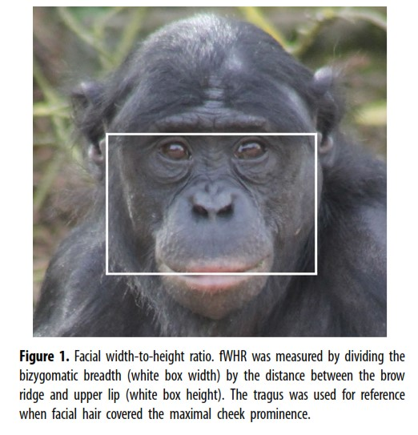
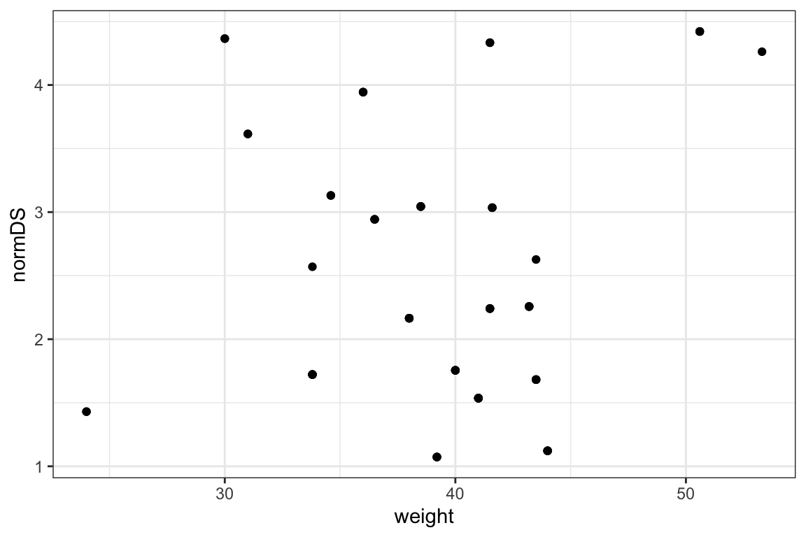
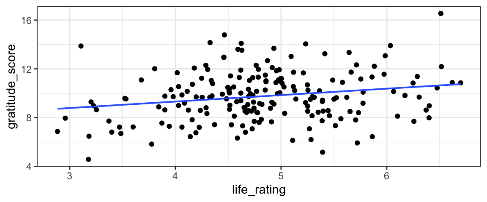
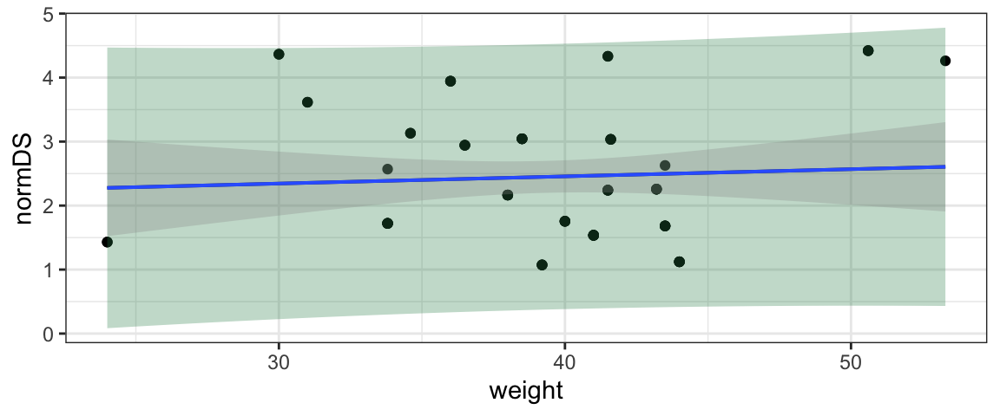

Learning Outcomes
In this module, you will be introduced the simple linear regression. This statistical model allows us to assess the relationship between two quantitative variables.
(It’s also a great stepping-stone to more advanced statistics: like bootstrap CIs and randomization tests, it can be generalized to a huge variety of problems and situations. Sound fun? Check out STAT 245!)
After this module, you will:
- Be familiar with the model equation for simple linear regression, and be competent at fitting simple linear regression models in R using
lm()and translating the R output into a fitted regression model equation of the form
\[ y_i = \beta_0 + \beta_1x_i + \epsilon, \epsilon \sim \text{Norm}(0, \sigma)\]
- State and work with the definition of linear regression model residuals, including explanation of how least-squares estimation is used to find the slope (\(\beta_1\)) and intercept (\(\beta_0\)) that define the best-fit line.
- List the conditions that must hold for linear regression to be an appropriate and reliable analysis method (Linearity, Independence of residuals, Normality of residuals, and Error variance constant, plus representative sample), and use plots to check them for a given case.
- Carry out hypothesis tests to check whether the true regression slope is 0 (in which case there is no association between the predictor and response variables). These can be t-tests or ANOVA, which are equivalent for a simple linear regression model.
- Make predictions from a fitted model, including point estimates/expected values (“the point on the line”) and interval estimates (confidence or prediction intervals)
Text book reference: IMS Chapter 8 and (for review) Chapter 3
Recap
Text book reference: Chapter 3
Earlier this semester, we learned to fit linear regression models and check the conditions (LINE) that must hold for such models to give reliable results. This tutorial does review that material, so if you already feel confident with it, you can skip ahead to the Inference section of the tutorial.
Let’s start with a reminder of the form of our linear regression equation:
\[ y = \beta_0 + \beta_1 x + \epsilon, \epsilon \sim \text{Norm}(0, \sigma)\]
- \(y\) is the response variable
- \(x\) is the predictor (or explanatory) variable
- \(\beta_0\) is the intercept. To fit the model to a specific dataset, we have to estimate the numeric value of this parameter.
- \(\beta_1\) is the slope. To fit the model to a specific dataset, we have to estimate the numeric value of this parameter.
- \(\epsilon\) are the residuals (or errors).
- They measure the vertical distance between an observed data point (\(y_i\) is the \(i\)th one) and the predicted (or fitted) value on the line for the same predictor variable value (\(\hat{y}_i\)).
- They have a normal distribution with mean 0 and standard deviation \(\sigma\) (some value that we can estimate once we have the slope and intercept: we compute the fitted values \(\beta_0 + \beta_1x\) and subtract from the observed response variable values to get the residuals, then estimate their standard deviation \(\sigma\).)
Finding the Betas
To find the “best-fitting” regression line for a dataset, we need to first define a metric to measure how “well” a line fits, and then find the \(\beta\)s (intercept and slope(s)) that maximize it. (Actually, we’ll come up with a way to measure the mismatch between a line and the data, and find the \(\beta\)s that minimize it - but it’s the same idea.)
In other words, our goal at the moment is to figure out how to estimate the \(\beta\)s.
Side note: you may wonder at this point, “Wouldn’t using maximum likelihood estimation be a great idea (remember MLE from fitting distributions to data)?” Well…sure. But we’re going to first consider another route to the exact same solution, which may be more intuitive - at least for those with less expertise in MLE.
Least Squares (visually)
In class last Thursday, we briefly explored the idea of choosing the “best-fit” line as the one that minimizes the sum of squared residuals.
This method is often called Least Squares Estimation (or Ordinary Least Squares).
First, check out Ordinary Least Squares Estimation (explained visually). Be sure to take advantage of the interactive elements to play around!)
Least Squares (practically)
Next, try your hand at off-the-cuff least squares estimation. Visit the PhET interactive simulator and:
- Pick an example from the central upper pull-down menu (or create your own dataset) and:
- Choose your best-guess slope and intercept (menu on the right)
- Compare your result with the best-fit line (menu on the left). How close were you? Why/how do you think you went wrong?
- View the residuals, and the squared residuals, for the best-fit line.
- Verify that you understand exactly what the residuals and the SSE = RSE = sum of squared residuals are measuring. In what sense does the minimal-SSE line come “closest” to the data points?
- Repeat the exercise for at least one more example.
Least Squares (explained)
This task is optional.
If you would like one more presentation of the idea of least squares fitting, watch the (slightly boring but very clear) StatQuest video explanation:
(You can also watch directly on YouTube if you prefer.)
In R: lm()
So, now we understand the principle of least squares estimation. But we certainly won’t employ it via guess-and-check to actually fit models to real data!
In fact, either via calculus or linear algebra, it’s possible to obtain formulas for the slope and intercept that minimize the SSE for a given dataset. And, of course, software knows how to use them. (If you want to learn to derive them yourself, plan on taking STAT 344 2 springs from now…and/or contact me for an extra optional tutorial that lays it out.)
The function we’ll use to fit a linear regression model in R is lm().
The first input to lm() (and basically all other R functions that fit regression models) is a model formula of the form:
lm ( &yy ~ &xx , data = mydata )
How do we fill in the empty boxes?
Model Formula: Left Hand Side
The left hand side of the formula is simplest: we just need to provide the name of the response variable that we want to model.
lm ( Y ~ &xx , data = mydata )
For example, if we use dataset MI_lead and our response variable is ELL2012, the skeleton of our formula would look like:
my_model <- lm( ELL2012 ~ _______, data = MI_lead)Model Formula: Right Hand Side
On the other side of the formula (after the tilde symbol \(\sim\)), we need to specify the name of the predictor variable.
While we will focus on simple linear regression with just one predictor, it’s possible to have multiple ones, separated by +.
MI_lead <- read.csv(file='http://sldr.netlify.com/data/MI_lead.csv')
my_model <- lm(ELL2012 ~ ELL2005 + Peninsula,
data = MI_lead)
summary(my_model)##
## Call:
## lm(formula = ELL2012 ~ ELL2005 + Peninsula, data = MI_lead)
##
## Residuals:
## Min 1Q Median 3Q Max
## -0.0048244 -0.0013235 -0.0006547 0.0012533 0.0072038
##
## Coefficients:
## Estimate Std. Error t value Pr(>|t|)
## (Intercept) 0.0012767 0.0003786 3.372 0.00116 **
## ELL2005 0.1576778 0.0311305 5.065 2.67e-06 ***
## PeninsulaUpper -0.0006220 0.0008028 -0.775 0.44083
## ---
## Signif. codes: 0 '***' 0.001 '**' 0.01 '*' 0.05 '.' 0.1 ' ' 1
##
## Residual standard error: 0.002407 on 78 degrees of freedom
## (2 observations deleted due to missingness)
## Multiple R-squared: 0.2758, Adjusted R-squared: 0.2573
## F-statistic: 14.86 on 2 and 78 DF, p-value: 3.417e-06Practice
Your turn: fit a few linear regression models of your own. You can use the MI_lead data, or read in one of the other suggested datasets:
- https://sldr.netlify.com/data/elephantSurvey.csv
- https://sldr.netlify.com/data/gapminder_clean.csv
- https://sldr.netlify.com/data/HaDiveParameters.csv
Each time, consider:
- How do you choose a response and a predictor variable?
- Usually the response is the main variable of interest, that you would like to predict or understand.
- The predictor might cause, or be associated with, changes in the response; it might be easier to measure. Or, we might want to test whether it is associated with changes in the response or not.
- See if you can express a scientific question which can be answered by your linear regression model.
- For example, a model with formula
ELL2012 ~ ELL2005would answer, “Does the proportion of kids with elevated lead levels in a county in 2005 predict the proportion in 2012? (Do the same locations have high/low levels in the two years?)”
- For example, a model with formula
my_model <- lm(_____ ~ _____, data = ______)
summary(my_model)Interpreting summary(lm(...))
Once you’ve fitted an lm() in R, how can you view and interpret the results?
(You can also watch directly on YouTube if you prefer.)
Model Equation Practice
You should be able to use summary(lm(...)) output to fill in numerical parameter estimates \(\hat{\beta}_0\), \(\hat{\beta}_1\), and \(\hat{\sigma}\) in the regression equation:
\[ y_i = \beta_0 + \beta_1x_i + \epsilon, \epsilon \sim \text{Norm}(0, \sigma)\]
An example model
To practice, let’s fit a simple linear regression model in R. For data, let’s consider a dataset containing scores of 542 people who chose to take an online nerdiness quiz. Higher scores mean more nerdiness. The participants also provided their ages. Variables in the data include score and age. Does someone’s age predict their nerdiness score?
Plot the data and use lm() to fit a linear regression model to explore this question. The code to read in the dataset is provided for you.
nerds <- read.csv('http://sldr.netlify.com/data/nerds.csv')nerds <- read.csv('http://sldr.netlify.com/data/nerds.csv')
gf_point(_____ ~ _____, data = ______)nerds <- read.csv('http://sldr.netlify.com/data/nerds.csv')
gf_point(score ~ age, data = nerds)nerds <- read.csv('http://sldr.netlify.com/data/nerds.csv')
gf_point(score ~ age, data = nerds)
nerd_model <- lm(_____ ~ _____, data = ______)nerds <- read.csv('http://sldr.netlify.com/data/nerds.csv')
gf_point(score ~ age, data = nerds)
nerd_model <- lm(score ~ age, data = nerds)nerds <- read.csv('http://sldr.netlify.com/data/nerds.csv')
gf_point(score ~ age, data = nerds)
nerd_model <- lm(score ~ age, data = nerds)
summary(nerd_model)Linear Regression Conditions
Before making any statistical inferences with our regression model, we should verify that all necessary conditions for its use are met. Otherwise, we risk presenting and interpreting inaccurate estimates and un-trustworthy conclusions!
In this case, there are 5 conditions:
- Representative sample: the sample data must be representative of the population of interest (as for any statistical inference).
4 more conditions are more specific to linear regression:
- Linearity of the predictor-response relationship: there is not a clear non-linear trend in a scatter plot of the response vs. the predictor.
- Independence of residuals: Knowing the value of one residual doesn’t help you predict the others; there are no lurking variables that affect the accuracy of the model predictions.
- Normality of residuals: The residuals should follow a normal distribution with mean 0.
- Error variance is constant: The variance (spread) of the residuals does not change with predictor variable value, or with fitted (on-the-line) value. Another word for this is homoscedasticity.
Model Assessment: Checking Conditions
Consider these more detailed explanations of each condition, accompanied by details about which plots to use to check each one and how to interpret them:
(You can also watch directly on YouTube if you prefer.)
Review and Practice
To review and practice what you just learned, make a brief detour to the separate tutorial on Regression Model Assessment.
If conditions are met, then we’re ready to draw conclusions from our fitted model. How?
Inference
Text book reference: IMS Chapter 8
Our goal: establish a method to generate confidence intervals and carry out tests for \(\beta_0\) and \(\beta_1\), the intercept and slope. In fact, we focus almost entirely on the slope, but the exact same methods work for the intercept too (it’s just that the slope is almost always of much more practical interest than the intercept).
We want to be able to test:
\[H_0: \beta_1 = 0\]
\[H_A: \beta_1 \neq 0\]
If the null hypothesis above is true, that means there is no linear association between the predictor and response variables – informally, it means the predictor is useless at predicting the response.
If we reject the null, that suggests there is a real association between the two variables (and the predictor is “worthwhile” statistically to help predict the response).
Before we carry out the test, let’s establish an example model.
Example
We will use the bonobos dataset as an example. You may recall the dataset from earlier this term. Briefly, the dataset is from a 2019 paper by J.S. Martin and colleagues on bonobo face measurements. The authors worked with 117 bonobos in European zoos and recorded data including their Sex, Age in years, weight, and some measurements about their face:

Finally, they also measured each bonobo’s assertiveness score (AssR) and dominance score (normDS).
The dataset is at https://sldr.netlify.com/data/bonobo_faces.csv and you can read the dataset in to R by running:
bonobos <- read.csv('http://sldr.netlify.com/data/bonobo_faces.csv') %>%
na.omit()
bonobosPractice
We might wonder whether size (as measured by weight) is a good predictor of the dominance score, normDS. Graphically:
gf_point(normDS ~ weight, data = bonobos)
Fit the corresponding regression model in R and view its summary():
bonobo_lm <- lm(... , data = bonobos)
summary(bonobo_lm)bonobo_lm <- lm(normDS ~ weight, data = bonobos)
summary(bonobo_lm)SE of Sampling Distributions
Text book reference: IMS Ch. 8.1.3
In fact, as you may have noticed, the summary() of an lm() fit includes not only estimates of the parameters \(\beta_0\) and \(\beta_1\), but also the standard errors of the corresponding sampling distributions! (Hooray.) These are found in the coefficient table, labelled "Std. Error".
bm <- lm(normDS ~ weight, data = bonobos)
summary(bm)##
## Call:
## lm(formula = normDS ~ weight, data = bonobos)
##
## Residuals:
## Min 1Q Median 3Q Max
## -1.3794 -0.8138 -0.2354 0.6043 2.0207
##
## Coefficients:
## Estimate Std. Error t value Pr(>|t|)
## (Intercept) 2.00774 0.92555 2.169 0.0337 *
## weight 0.01122 0.02334 0.481 0.6322
## ---
## Signif. codes: 0 '***' 0.001 '**' 0.01 '*' 0.05 '.' 0.1 ' ' 1
##
## Residual standard error: 1.031 on 66 degrees of freedom
## Multiple R-squared: 0.003491, Adjusted R-squared: -0.01161
## F-statistic: 0.2312 on 1 and 66 DF, p-value: 0.6322CI for the slope
Text book reference: IMS Chapter 8.1.3
Although we won’t derive the reasons why in detail, the sampling distribution for the slope has a t distribution with \(n - 2\) degrees of freedom (where \(n\) is the number of rows in the dataset).
So, after all that, we can find a CI for a regression slope according to:
\[ \hat{\beta}_1 \pm t_*SE(\hat{\beta}_1)\] Where \(t_*\) is a critical value from a \(t(n-2)\) distribution, and SE(_1) is the standard error of the slope from the coefficient table in the model `summary().
As an example, find a 95% CI for the slope of our bonobo regression model.
bm <- lm(normDS ~ weight, data= bonobos)
summary(bm)
CI95 <- -0.14278 + c(-1,1) * qt(0.975, df = nrow(bonobos) - 2) * 0.06668
CI95# a shortcut:
bm <- lm(normDS ~ weight, data= bonobos)
confint(bm, "weight", level = 0.95)Notice the shortcut – R function confint() returns CIs (with a default confidence level of 95%).
Test for the slope
Text book reference: IMS Chapter 8.1.3
We can also test the null hypothesis \(H_0: \beta_1 = \beta_{1\text{null}}\) (where \(\beta_{1\text{null}}\) is some hypothetical slope value of interest) using the standardized test statistic
\[ t = \frac{\hat{\beta}_1 - \beta_{1\text{null}}}{SE(\hat{\beta}_1)}\]
The most common value for \(\beta_{1\text{null}}\) is \(0\), because if \(\beta_1 = 0\) that means that there is no relationship between the predictor and response and the predictor is useless as a predictor. If we can reject that null hypothesis, we can conclude that the predictor does have some utility.
To practice, carry out a two-sided test of \(H_0: \beta_1 = 0\) for the bonobo regression.
bm <- lm(normDS ~ weight, data= bonobos)
summary(bm)
t_stat <- (-0.14278 - 0) / (0.06668)
p_val <- 2 * pt(t_stat, df = nrow(bonobos) - 2, lower.tail = TRUE)
p_val#shortcut: just use model summary
bm <- lm(normDS ~ weight, data= bonobos)
summary(bm)A shortcut: Notice that this p-value is already in the model summary (in the last column of the coefficient table, labelled “Pr(\(>\vert\)t\(\vert\))”).
ANOVA??
Note that for simple linear regression, the p-value reported at the very end of the model summary is the same as the one for the slope in the coefficient table. This is only the case when there’s only one predictor, since the test at the bottom is testing \(H_0: \text{all the slopes in the model are 0 for all predictors}\). But…it’s reported along with an F-statistic – which reminds us of ANOVA from last week – why is this??
ANOVA for Regression
(Not in IMS book)
We can, if we wish, use ANOVA to measure the model utility of a simple linear regression with one quantitative predictor. Model utility means, basically, whether the model is any good – is it better to include the predictor than to stick with a simple intercept-only model? In the simple (one-predictor) linear regression case, the model utility test is basically the same as testing \(H_0: \beta_1 = 0\).
Before we examine the details, let’s just try it and see what happens. As our example, we’ll return to our case study from the ANOVA module, and try to model gratitude_score as a function of life_rating, like we did at the beginning of the module.
require(car)
Anova(lm(gratitude_score ~ life_rating, data = grateful))Comparing to our previous results with a t-test of \(H_0: \beta_1 = 0\):
summary(lm(gratitude_score ~ life_rating, data = grateful))##
## Call:
## lm(formula = gratitude_score ~ life_rating, data = grateful)
##
## Residuals:
## Min 1Q Median 3Q Max
## -4.891 -1.466 -0.098 1.219 5.899
##
## Coefficients:
## Estimate Std. Error t value Pr(>|t|)
## (Intercept) 7.2008 0.8828 8.157 4.22e-14 ***
## life_rating 0.5295 0.1806 2.932 0.00377 **
## ---
## Signif. codes: 0 '***' 0.001 '**' 0.01 '*' 0.05 '.' 0.1 ' ' 1
##
## Residual standard error: 1.98 on 194 degrees of freedom
## Multiple R-squared: 0.04243, Adjusted R-squared: 0.03749
## F-statistic: 8.596 on 1 and 194 DF, p-value: 0.003775We notice that the p-values for the ANOVA and the t-test are identical.
Clued in by the matching p-values, we can also note that the t-test statistic (2.9318) is related to the ANOVA F statistic (8.5956): \(F = t^2\).
Cool. But, does it make sense?
So, the two tests are equivalent. But can we actually conceptualize the ANOVA with a quantitative predictor, analogous to the way we did for the case of comparing means of 3+ groups? Sure!
Here, we usually change notation a little - instead of talking about SSG and MSG we use SSM and MSM (Sum of Squares for the Model and Mean Squares for the Model, since there’s now a regression line instead of a set of group means).
Otherwise, the approach is exactly the same, but with a cool twist:
(You can also watch directly on YouTube if you prefer.)
Model Predictions
So far, we learned to generate confidence intervals (or do hypothesis tests) for the slope and intercept parameters of a simple linear regression.
But often, we are interested in using fitted regression models to predict response variable values in specific scenarios. In other words, we’re sometimes more interested in the predicted response variable values \(\hat{y}\) than the parameter estimates \(\beta_0\) and \(\beta_1\).
It’s a simple matter to compute point estimates of these fitted values: if we have an x-value of interest (let’s call it \(x_*\)), we just compute \(\hat{\beta}_0 + \hat{\beta}_1x_*\) to get our estimate.
Graphing Predictions
We can compute numerical predictions using the model equation (or predict() - see below). But often it’s also desirable to show a plot of the data with the fitted regression line overlaid. Luckily, R function gf_lm() makes it easy:
gf_point(gratitude_score ~ life_rating, data = grateful) %>%
gf_lm()
Model Predictions with Uncertainty (CIs and PIs)
But what about uncertainty?
Ways to Conceptualize Uncertainty in Predictions
Not in the IMS text book - sorry…
We could do this two ways!
- A confidence interval: We could find an interval that gives plausible values for “where the line is located”, taking into account uncertainty in the intercept and slope estimates. Another way of thinking about this is that it gives a plausible range of values for the expected value (mean) of the response variable for all hypothetical new observations with a certain predictor-variable value.
- A prediction interval: We could find and interval that gives plausible values for “the point cloud” of possible new observations, taking into account uncertainty in the slope and intercept, plus the residual variance. Another way of thinking about this is that it gives a plausible range of values for the response for one new datapoint with a certain predictor-variable value. Note that we’ve coined the new name prediction interval to differentiate it from the other one, this is really also a CI (just for a very specific scenario).
Confidence vs Prediction Intervals: video
Let’s first review a practical example just to keep the big picture front and center.
Note: this video is from a great contemporary statistician and teacher, Mine Çetinkaya-Rundel - she’s awesome…more so even than this video suggests…
(You can also watch directly on YouTube if you prefer.
Confidence and Prediction Intervals in R
You can compute confidence or prediction intervals in R using predict(). Assuming you have a fitted model m with response y and predictor x_star in dataset d, and you want an interval estimate of the fitted value for \(x = x_*\):
m <- lm(y ~ x, data = d)
new_data <- data.frame(x = x_star)
conf_int <- predict(m, newdata = new_data,
interval = 'confidence',
level = 0.95)
pred_int <- predict(m, newdata = new_data,
interval = 'prediction',
level = 0.95)If you wanted to make interval estimates for more than one value \(x_*\), you can just enter a list of values in new_data:
new_data <- data_frame(x = c(x_star1, x_star2, ...))Finally, if you want to plot one or both intervals on a scatter plot of the data, you can!
So you can actually see the result, let’s demonstrate with a regression predicting bonobo dominance score normDS by weight from the bonobos dataset.
gf_point(normDS ~ weight, data =bonobos) %>%
gf_lm(interval = 'prediction', color = 'black',
fill = 'seagreen') %>%
gf_lm(interval = 'confidence') 
Confidence and Prediction Intervals: Practice
Practice
Find an interval estimate for the assertiveness score (AssR) of Zeke, and 8-year-old male bonobo, based on the dataset bonobos (which also contains the variable Age).
m <- lm()
new_data <- data.frame()
predict()m <- lm(AssR ~ Age, data = bonobos)
new_data <- data.frame()
predict()m <- lm(AssR ~ Age, data = bonobos)
new_data <- data.frame(Age = 8)
predict()m <- lm(AssR ~ Age, data = bonobos)
new_data <- data.frame(Age = 8)
predict(m, newdata = new_data, interval = ...)m <- lm(AssR ~ Age, data = bonobos)
new_data <- data.frame(Age = 8)
predict(m, newdata = new_data, interval = 'prediction')More Practice
The dataset earn contains data on people’s income (earn) and their height in inches (height) from a 1994 survey of Americans. Fit a model predicting income as a function of height and then produce an interval estimate for the income of people who are 6’4" (76 inches) tall.
m <- lm()
new_data <- data.frame()
predict()m <- lm(earn ~ height, data = earn)
new_data <- data.frame()
predict()m <- lm(earn ~ height, data = earn)
new_data <- data.frame(height = 76)
predict()m <- lm(earn ~ height, data = earn)
new_data <- data.frame(height = 76)
predict(m, newdata = new_data, interval = ...)m <- lm(earn ~ height, data = earn)
new_data <- data.frame(height = 76)
predict(m, newdata = new_data, interval = 'confidence')